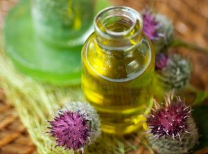

Cum grabim cresterea parului: Remedii si tratamente naturiste - Cosânzene
 Coafuri back Tutoriale video Coafuri de zi cu zi Coafuri Mirese Coafuri de ocazie Coafuri sarbatori Ingrijirea parului back Sfaturi si trucuri Produse pentru coafat Masti naturale pentru par Tratamente pentru par Tendinte back Noutati Recenzii Tunsori Culori de par Bebe Cosanzean Lifestyle back Frumusete Moda Evenimente Stil de viata Cosanzene Calatoare Cosanzenele Gatesc Contact Coafuri Tutoriale video Coafuri de zi cu zi Coafuri Mirese Coafuri de ocazie Coafuri sarbatori Ingrijirea parului Sfaturi si trucuri Produse pentru coafat Masti naturale pentru par Tratamente pentru par Tendinte Noutati Recenzii Tunsori Culori de par Bebe Cosanzean Lifestyle Frumusete Moda Evenimente Stil de viata Cosanzene Calatoare Cosanzenele Gatesc Contact Cosânzene Sfaturi si trucuri , Ingrijirea parului , Masti naturale pentru par , Tratamente pentru par
Coafuri back Tutoriale video Coafuri de zi cu zi Coafuri Mirese Coafuri de ocazie Coafuri sarbatori Ingrijirea parului back Sfaturi si trucuri Produse pentru coafat Masti naturale pentru par Tratamente pentru par Tendinte back Noutati Recenzii Tunsori Culori de par Bebe Cosanzean Lifestyle back Frumusete Moda Evenimente Stil de viata Cosanzene Calatoare Cosanzenele Gatesc Contact Coafuri Tutoriale video Coafuri de zi cu zi Coafuri Mirese Coafuri de ocazie Coafuri sarbatori Ingrijirea parului Sfaturi si trucuri Produse pentru coafat Masti naturale pentru par Tratamente pentru par Tendinte Noutati Recenzii Tunsori Culori de par Bebe Cosanzean Lifestyle Frumusete Moda Evenimente Stil de viata Cosanzene Calatoare Cosanzenele Gatesc Contact Cosânzene Sfaturi si trucuri , Ingrijirea parului , Masti naturale pentru par , Tratamente pentru par
Cum grabim cresterea parului: Remedii si tratamente naturiste
Posted by cosanzene January 11, 2016 Facebook 0 Twitter 0 Pinterest 0 Google+ 0Nu exista comenzi rapide sau tratamente minune pentru cresterea parului peste noapte. In medie, parul creste aproximativ 1,5 cm pe luna. Starea de sanatate generala, stilul de viata si factorii genetici afecteaza cresterea parului.
Putem incuraja cresterea parului printr-o dieta buna si o ingrijire corespunzatoare. Iata care sunt cele mai bune sfaturi de care trebuie sa tinem cont daca vrem ca parul nostru sa creasca lung, sanatos si puternic.
1. Aminteste-ti ca parul nu creste peste noapte
In general, parul creste 1,5 cm pe luna si asta doar daca este super sanatos si nu are o tona de varfuri despicate. Asadar, conteaza foarte mult sa ai rabdare si sa ii oferi ingrijirea potrivita.
2. In mod ironic, foarfeca este cea mai buna prietena a parului
Desi tunsul nu va ajuta ca parul sa creasca mai repede, acesta va pastra un aspect sanatos al varfurilor si va preveni ruperea acestora. Daca nu sunt taiate, varfurile despicate urca treptat catre radacina firului de par, oprind cresterea acestuia.
O data la 10-12 saptamani este recomandat sa tai un centimetru din par.
3. Alimentatia este foarte importanta
O dieta bogata in proteine, vitamine si minerale reprezinta o conditie esentiala pentru cresterea sanatoasa a parului. Opteaza pentru alimente bogate in vitaminele A, B, C si E, fier, zinc, cupru, magneziu si seleniu.
Alimente pe care trebuie sa le consumi : lapte, branza, iaurt, carne de pui, oua, cereale integrale, somon, spanac, broccoli, ardei gras, varza, patrunjel, citrice, avocado, paine neagra, ovaz.
In casa poti face sucuri proaspete la blender sau la storcator din: portocale, grapefruit, morcov, sfecla, salata verde.
Pestele, semintele de in, nucile, fasolea si uleiul de masline sunt foarte bune pentru cresterea parului, mai ales ca 3% dintr-un fir de par contine acizi grasi omega3.
Evita deficientele nutritionale pentru ca acestea au tendinta sa afecteze in mod negativ parul. De exemplu, lipsa vitaminei E si a zincului duce la rarirea si la caderea parului.
4. Maseaza-ti scalpul
Masajul ajuta la o vascularizare corecta la nivelul scalpului care, la randul sau, stimuleaza foliculii de par. De asemenea, nu uita ca la fiecare spalare sa folosesti o masca de par profund hranitoare sau un ulei cald.
Cum se aplica:
Inainte de dus, foloseste un ulei cald sau o masca de par si maseaza bine zona scalpului, intr-o miscare circulara (timp de 3-5 minute);
Clateste parul, apoi foloseste samponul obisnuit si un balsam pentru descurcarea parului.
5. Piaptana-ti parul ca si cum firele ar fi din aur
Periajul constant poate provoca daune fizice parului tau. Cand descurci parul umed, asigura-te ca pornesti din zona varfurilor si cresti usor catre radacina.
Foloseste un ulei sau un spray pentru descurcarea parului; de asemenea, nu uita sa utilizezi un pieptan cu peri foarte rari (indicat din lemn).
6. Nu face o obisnuinta din a-ti prinde parul
Da, este foarte simplu sa iti prinzi parul intr-o coada lejera sau sa ii faci o impletitura si sa iesi din casa. Insa parul prins pentru o perioada lunga de timp (in special daca vorbim de un elastic prins strans) duce la deteriorarea si ruperea firului de par.
Importat: incearca sa dormi cu parul liber.
7. Foloseste masti cu ou
Ouale sunt extrem de benefice pentru cresterea parului deoarece contin numeroase proteine, fier, sulf, fosfor, zinc si seleniu.
Poti incerca aceasta masca de par o data la doua saptamani (sau o data pe luna).
Varianta 1:
Amesteca un ou cu patru linguri de ulei de seminte de struguri si cateva picaturi de ulei de levantica. Aplica pe par si scalp, insistand in zona scalpului timp de 2-3 minute. Lasa sa actioneze timp de jumatate de ora. Clateste parul cu apa calduta si foloseste samponul obisnuit.
Varianta 2:
Amesteca doua galbenusuri de ou cu doua linguri de ulei de masline; aplica pe scalp, apoi coboara usor catre varfuri; lasa sa actioneze pentru 20 de minute. Clateste cu apa calduta si foloseste samponul obisnuit.
Varianta 3:
Amesteca un ou cu cinci linguri de lapte, doua linguri de ulei de masline si sucul de la o jumatate de lamaie. Aplica aceasta masca pe scalp si lasa sa actioneze pentru 20 de minute. Clateste cu apa calduta si foloseste samponul obisnuit.
8. Infuzia de plante ajuta la cresterea parului
Plante precum rozmarin, urzica, brusture, coada-calului, musetel si salvie ajuta la cresterea parului. Rozmarinul, in general, este ideal pentru cresterea parului deoarece stimuleaza foliculii de par.
Prepara o infuzie de plante prin adaugarea acestora in apa fierbinte timp de 10-20 de minute. Strecoara si foloseste ceaiul obtinut (caldut, nu fierbinte) ca o clatire finala dupa samponare si aplicarea balsamului. Aceasta infuzie nu doar ca ajuta la cresterea parului, ci il si descurca, ii ofera stralucire si il face mai moale si mai usor de aranjat.
De asemenea, poti amesteca aceste infuzii de plante sau uleiuri esentiale din aceste plante in sampon.
9. Nu uita de aloe vera
Ofera-i parului tau rasfatul de care are nevoie cu aloe vera; aceasta planta minune ajuta la cresterea parului. De asemenea, reduce matreata si ofera stralucire naturala parului.
Amesteca gel proaspat de aloe vera cu putina zeama de lamaie si aplica masca pe scalp, lasand sa actioneze timp de 20 de minute; clateste bine si foloseste sampon.
Repeta procesul o data sau de doua ori pe saptamana.
Sfat : pentru o hidratare intensa, poti combina aloe vera cu cantitati egale de lapte de cocos sau ulei de cocos si ulei de ricin.
Facebook 0 Twitter 0 Pinterest 0 Google+ 0
Comments
comments
par lung , caderea parului , cresterea parului , masti pentru cresterea parului , tratamente pentru cresterea parului , solutii , remedii naturiste , infuzii de plante 1 CommentWrite a comment
Related Posts
February 12. 20215 Probleme cu care parul se confrunta pe timpul iernii si cum sa le rezolvam
December 22. 2020Cum ne uscam parul corect?
July 30. 2020Dieta care previne caderea parului si aparitia matretii
1 Comment
Tania
May 16. 2016 ReplyEu folosesc ulei de cocos pentru par. Ajuta la regenerarea lui si la crestere: http://podoabacapilara.blogspot.ro/2015/11/alege-uleiul-de-cocos-pentru-o.html
Leave a comment Cancel reply
January 613 Imagini care arata prin ce trece o fata cu parul lung
January 1320 de probleme pe care doar fetele cu parul scurt le inteleg
Follow me
Latest stories
Tarta cu fructe proaspete si crema de vanilieCea mai fresh tarta pe care 5 Probleme cu care parul se confrunta pe timpul iernii si cum sa le rezolvam
Iarna poate fi un cosmar pentru Cum ne uscam parul corect?
Sfaturi de care sa tinem cont
@INSTAGRAM COSANZENE
Something went wrong: This endpoint has been retiredAboneaza-te
Facebook Instagram Pinterest YouTube Politica de Confidentialitate Folosim cookies pentru a-ti asigura o experienta cat mai placuta pe acest site. Daca vrei sa continui sa folosesti acest site, te rog sa accepti ca esti de acord cu politica noastra de confidentialitate Sunt de acord